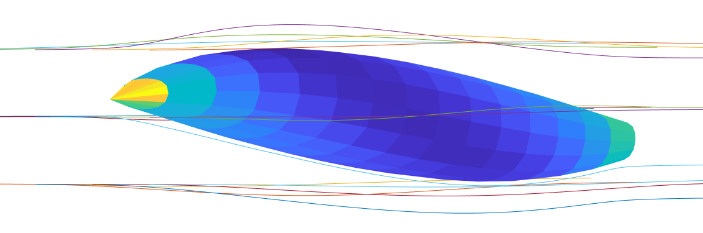
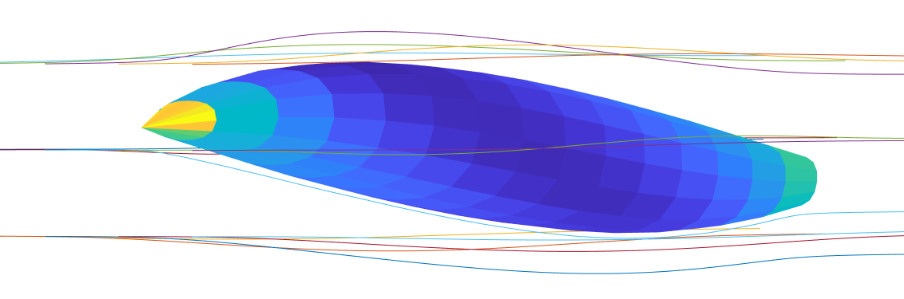
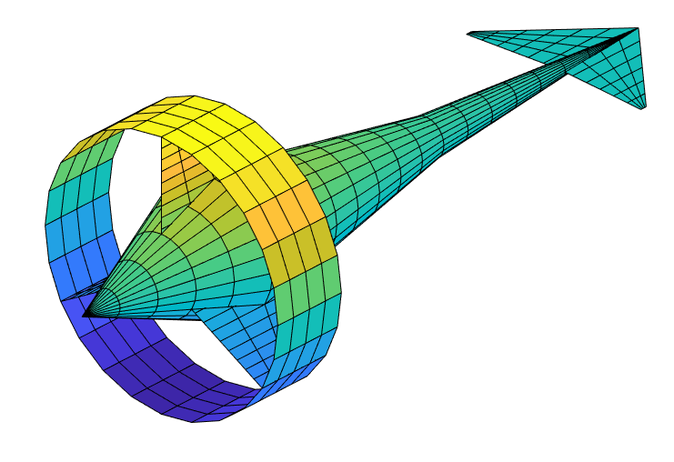

VORTEX TOOLS is under continuous development. At the current stage, it can serve as a great learning tool for students, as well as a powerful asset for serious design work. Perhaps more importantly, it holds vast potential for further development, which can be aimed in multiple directions:
